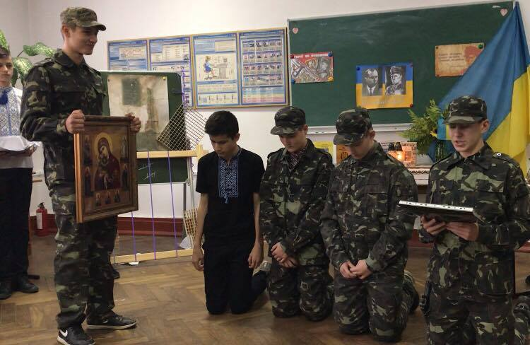

«Увага!Діти - на дорозі!»
04.09.2018
У Івано - Франківській загальноосвітній школі №7 розпочались профілактичні заходи щодо попередження дитячого дорожньо-транспортного травматизму «Увага!Діти - на дорозі!». 04.09. з учнями початкових класів провели бесіду начальник відділу зв'язків з громадкістю, старший лейтенант поліції Максимчак Христина Богданівна та старший інспектор відділу зв'язків з громадкістю Управління патрульної поліції в Івано -Франківській області

Батьки і діти - це тандем природи, в якім закладені усі земні чуття
10.05.2018
На XVI загальноміському дитячо-юнацькому Фестивалі мистецтв «Таланти землі Галицької» перемогу у номінації «Глядацьких симпатій» отримав вокальний ансамбль учнів та батьків ЗШ №7.

Будь горда, Україно, за свої воінів УПА
16.02.2018
26 жовтня в Івано-Франківській загальноосвітній школі І-ІІІ ст. № 7 відбувся виховний захід, присвячений 75-ій річниці створення УПА під гаслом
«Так боролись славні українці,
бо ідея в них була свята,
бились скрізь більшовиків і німців
наші горді вояки УПА».